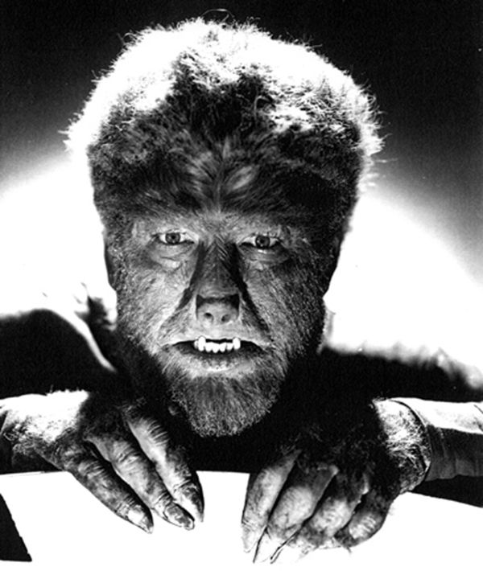
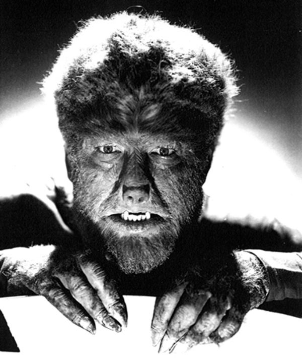

UNIVERSAL HORROR MOVIE MONSTERS
HOME ◉
ALTERNATE VERSION ◉
RYAN'S HOMEPAGE ◉
 

The Wolfman
The Wolf Man is a 1941 American horror film written by Curt Siodmak and produced and directed by George Waggner. The film stars Lon Chaney Jr. in the title role. Claude Rains, Warren William, Ralph Bellamy, Patric Knowles, Bela Lugosi, Evelyn Ankers, and Maria Ouspenskaya star in supporting roles. The title character has had a great deal of influence on Hollywood's depictions of the legend of the werewolf.[2] The film is the second Universal Pictures werewolf film, preceded six years earlier by the less commercially successful Werewolf of London (1935). This film is part of the Universal Monsters movies and is of great cinematic acclaim for its production.